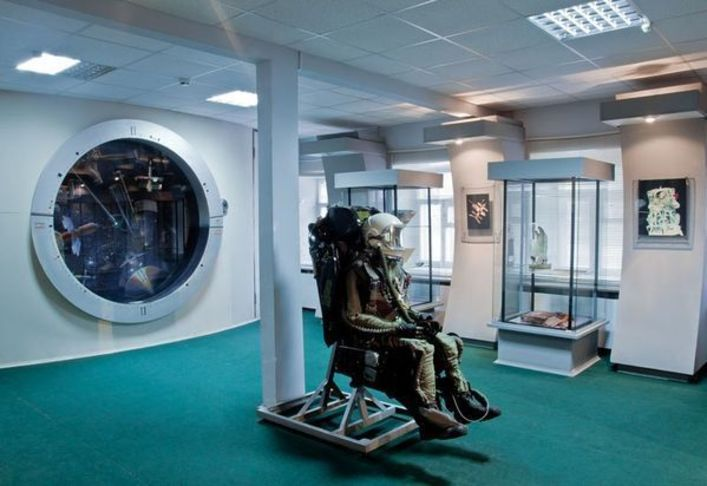
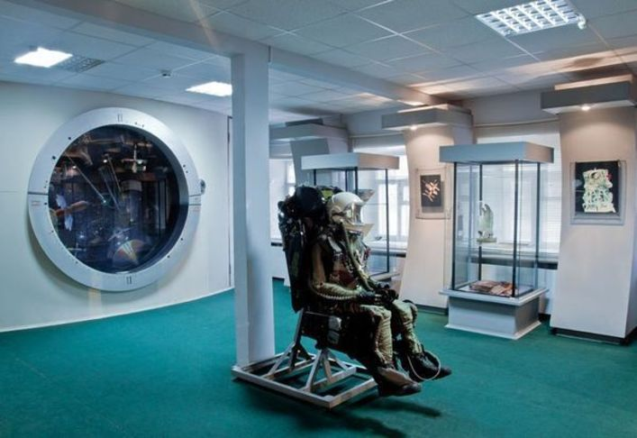
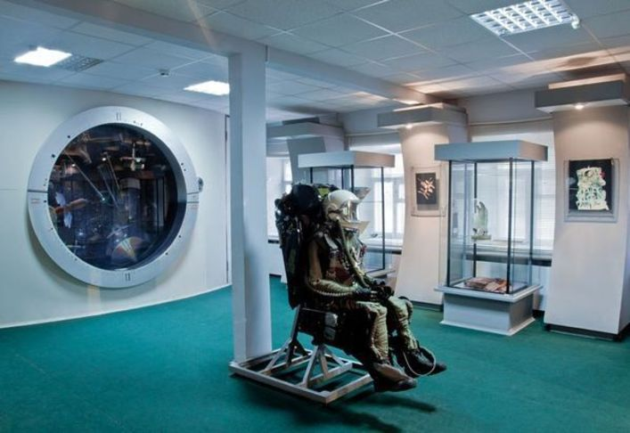

В историческом центре уездного города Вятки на улице Преображенской 160 лет назад в 1858 году усилиями купцов Шуравиных построен большой полукаменный с антресолями флигель. Здание сдавалось в наем, и с 1873 по 1878 гг здесь проживала семья великого русского учёного, основоположника космонавтики Константина Эдуардовича Циолковского.
10 апреля 1988 г. состоялось торжественное открытие музея К.Э.Циолковского, авиации и космонавтики в этом историческом здании. В открытии приняли участие Виктор Петрович Савиных, летчик-космонавт СССР, дважды Герой Советского Союза, Александр Александрович Серебров, летчик-космонавт СССР, Герой Советского Союза, правнуки и внучка К. Э. Циолковского. В 1989 г. проведены первые Молодежные Циолковские Чтения, ставшие впоследствии всероссийским форумом, где свои исследовательские работы представляют школьники и студенты из всех регионов России. В 2007 г. на территории музея установлен бюст В. П. Савиных.
В декабре 2014 г. по инициативе В. П. Савиных началось строительство второго здания Музея — современного музейного учреждения с новыми экспозиционными залами, площадями для хранения экспонатов, цифровым планетарием. 13 марта 2018 г. состоялось торжественное открытие Детского космического центра.

Музейная коллекция была основана в 1988 году, к началу 2020-го она достигла 12057 тыс. единиц хранения. В Музее хранятся образцы космической техники, вещественные реликвии, документы, газеты, фотографии и?негативы, аудио- и видеозаписи, почтовые марки, живопись и художественная полиграфия. Большая часть экспонатов поступает в фонды путём дарения. Экспозиция также включает произведения искусства разных жанров на тему космоса.
